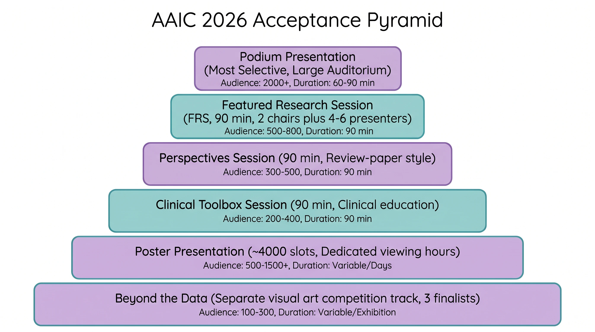
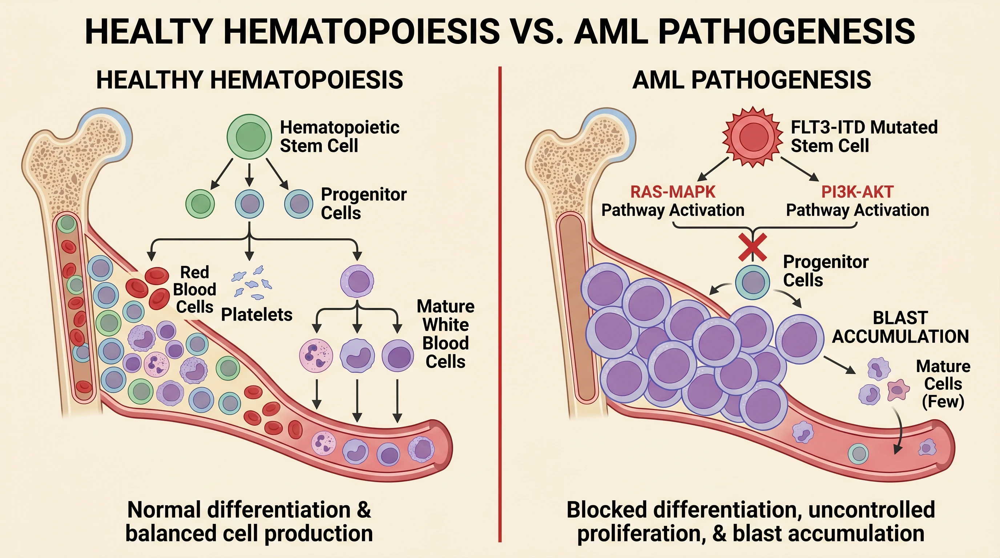
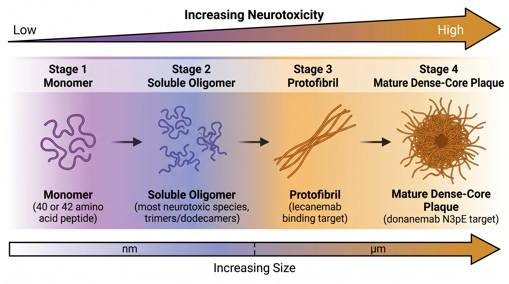
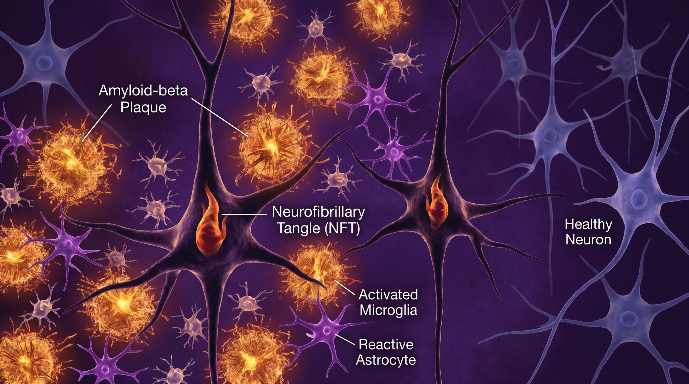

What is SciFig?
SciFig is an AI scientific illustrator built for researchers, educators, and students who need publication-ready figures but don't want to spend hours in Illustrator or hire a designer for a single graphic. Describe an idea, upload a rough sketch, drop in a reference figure or a PDF method section — SciFig turns it into a clean, accurate, journal-ready figure where every text label stays editable.
Unlike general-purpose AI image generators that hallucinate anatomy and scramble labels, SciFig is tuned for scientific accuracy and editability, so the figure you generate is one you can defend in peer review.
Six input modes, one workflow
| Mode | What it does |
|---|---|
| Text to Figure | Describe a mechanism or workflow in plain language → structured figure |
| Sketch to Figure | Hand-drawn doodle → polished scientific figure |
| Photo to Figure | Lab or microscopy photo → clean schematic |
| Reference to Figure | Existing figure as reference → your own variant |
| PDF to Figure | Paper method/results section → visualized figure |
| Figure Enhancer | Multimodal enhance — refine, restyle, upgrade |
Need pixel-level control? The Vector Canvas converts any figure into a fully editable, layered vector.
Built for publication
Editable at every step
- Every text editable after generation — no re-prompting
- Editable PPTX export with text layers intact
Journal-grade export
- Layered SVG vectors — Illustrator, Inkscape, PowerPoint compatible
- 8K PNG / JPG with AI super-resolution for print sizes
Figures researchers create with SciFig




Browse hundreds more in the SciFig Inspiration Gallery.
Get started
Visit scifig.ai, sign up free (no credit card), and get free daily credits — 50/day on the free plan, 100/day on paid plans. See pricing for plans and credit packs.
Frequently asked questions
What is SciFig?
SciFig is an AI scientific illustrator that turns text, sketches, references, PDFs, and photos into publication-ready scientific figures. It is built for scientific accuracy and editability, so every text label stays editable after generation.
Is SciFig free to use?
Yes. You can sign up for free with no credit card and get free daily credits — 50 per day on the free plan and 100 per day on paid plans — to start generating figures.
What inputs can SciFig turn into a figure?
SciFig supports six input modes: plain-text descriptions, hand-drawn sketches, lab or microscopy photos, existing reference figures, PDF method sections, and multimodal enhancement of an existing figure.
Can I export editable, publication-ready figures?
Yes. Every label stays editable, and you can export to editable PPTX, layered SVG (Illustrator, Inkscape, PowerPoint compatible), and 8K PNG/JPG with AI super-resolution for journal print sizes.
Is SciFig suitable for journal submissions?
SciFig is designed for scientific accuracy and editability, so figures can be reviewed, corrected, and dropped into a manuscript. Always verify labels, units, and journal formatting before submission.